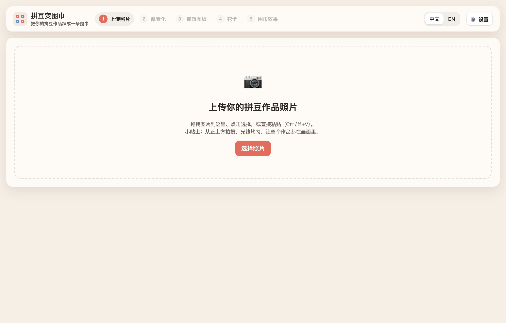
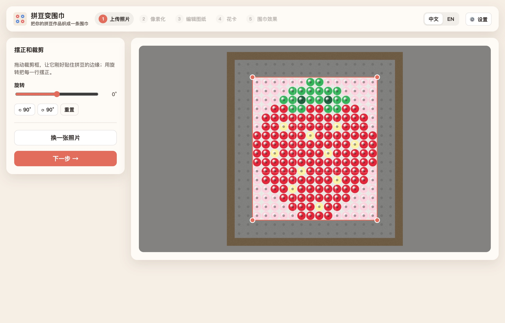
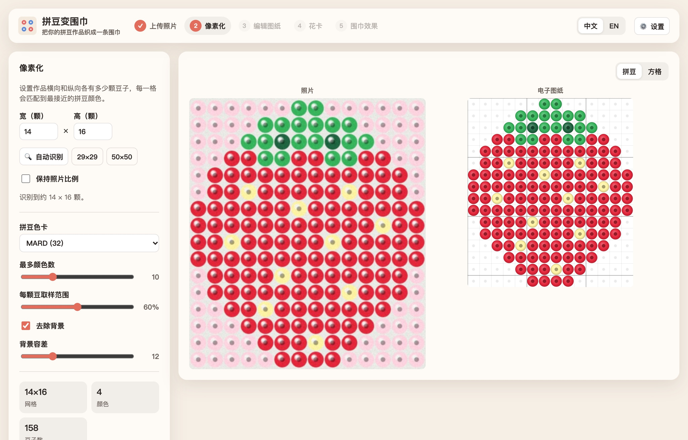
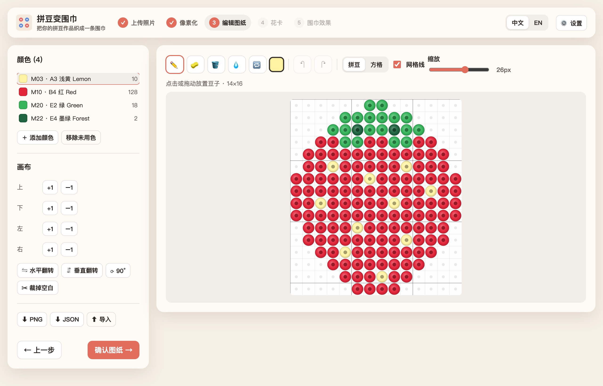
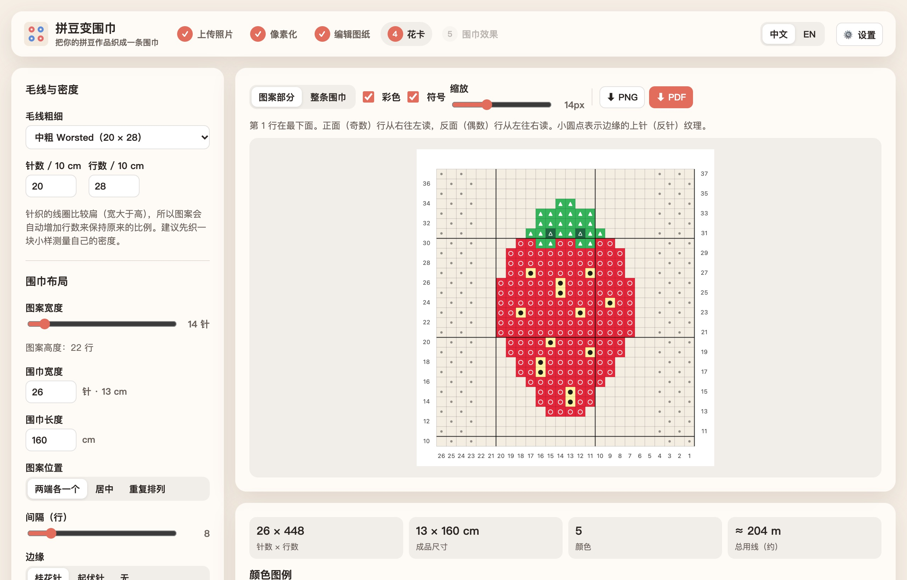
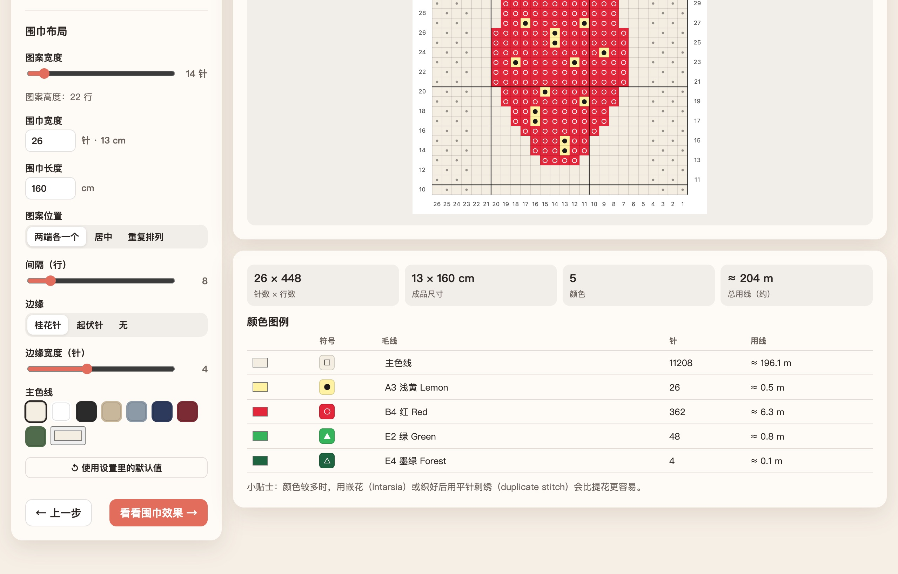
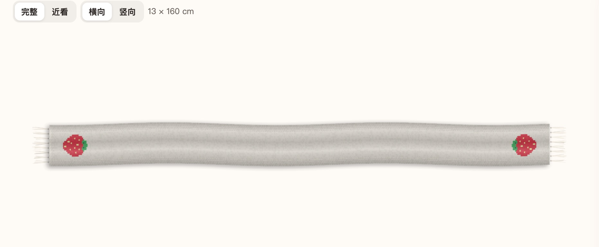
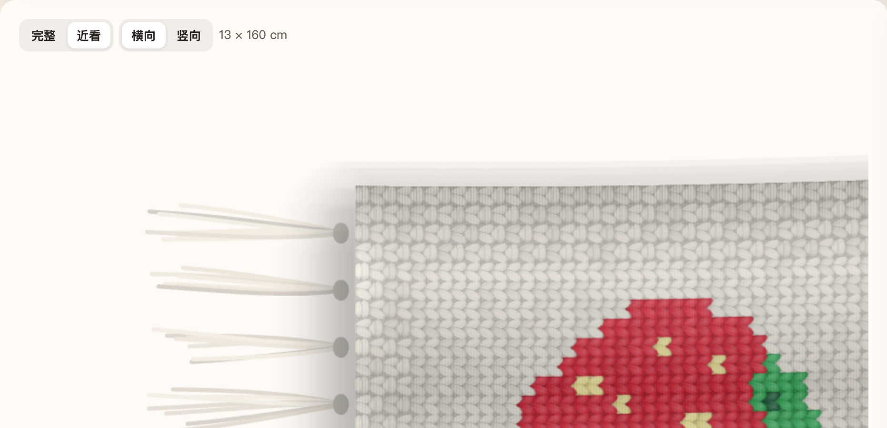
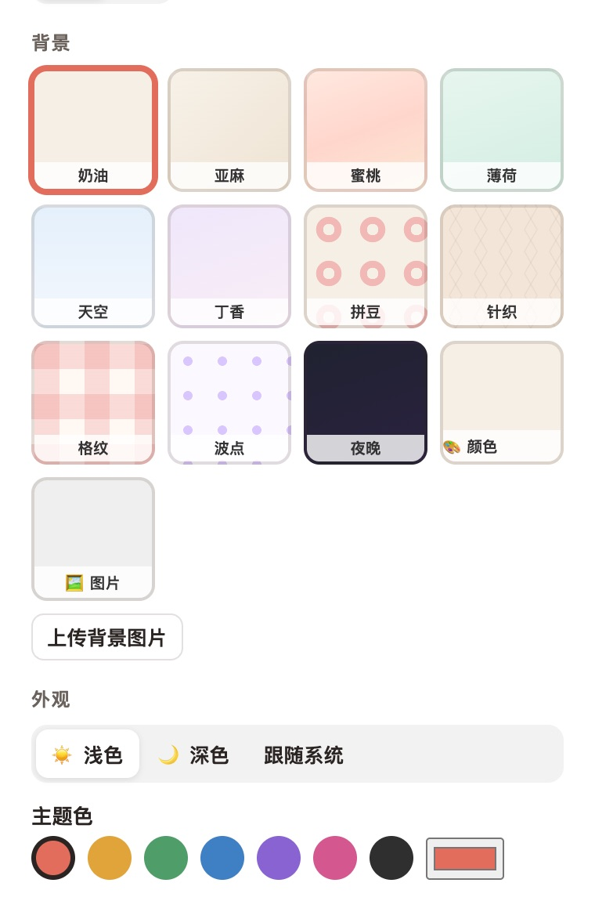

使用教程 · 测试版
把你做好的拼豆作品，变成一条可以织出来的围巾。
整个过程大约 5 分钟，不需要任何电脑基础。照片只在你自己的电脑里处理，不会上传到网上。

打开后看到的首页。顶部是 5 个步骤，做完一步会打上 ✓。

裁剪框贴住了草莓的边缘，外面的部分会变暗，表示被裁掉。
网站会把照片切成一个个小格子，每一格对应一颗豆子，并找到最接近的拼豆颜色。

左：原照片 右：生成的电子图纸。下方显示格子大小、颜色数和豆子总数。
| 选项 | 作用 |
|---|---|
| 拼豆色卡 | 选择你用的拼豆品牌（MARD / Perler / Hama），或者「从照片取色」。 |
| 最多颜色数 | 颜色太多、出现杂色时调小一点。 |
| 去除背景 | 勾选后会把作品周围的空板或背景去掉，只留下作品本身。 |
| 每颗豆取样范围 | 豆子中间的孔影响了颜色时，可以调小一点。 |
这里可以像画画一样修改图纸，比如修正识别错的颜色。不需要修改的话，直接点 确认图纸 →。

左边：用到的颜色（数字 = 用了几颗）和画布工具 右边：图纸
| ✏️ | 画笔：点一下或拖动来放豆子 |
| 🧽 | 橡皮：去掉豆子 |
| 🪣 | 填充：把一整块相连的同色区域换色 |
| 💧 | 吸管：点一颗豆子，取它的颜色 |
| 🔁 | 替换颜色：把整张图里这个颜色全部换掉 |
| ↶ ↷ | 撤销 / 重做，画错了别担心 |
这一步把拼豆图纸变成毛线编织用的花卡：每个小格 = 一针，每种颜色有自己的符号。

左边调整围巾参数，右边实时显示花卡。
| 设置 | 说明 |
|---|---|
| 毛线粗细 / 密度 | 选你打算用的毛线粗细。如果你织过小样，可以填自己量到的「每 10 cm 几针、几行」。 |
| 图案宽度 | 图案织多宽（多少针），图案会自动按比例变大或变小。 |
| 围巾宽度 / 长度 | 整条围巾的尺寸，右边会显示换算成的厘米数。 |
| 图案位置 | 两端各一个（围上后两头都能看到）、居中或重复排列。 |
| 边缘 | 桂花针 / 起伏针可以防止围巾边缘卷起来。 |
| 主色线 | 围巾底色。 |
往下滚动，可以看到颜色图例：每种颜色的符号、需要织多少针、大约要用多少米毛线。

点 看看围巾效果 →，就能看到织好后的围巾模拟图 🎉

完整视图：两端各有一颗草莓，带流苏和垂坠感。

点「近看」可以看到一针一针的毛线质感。
点右上角的 ⚙️ 设置：
设置会自动保存，下次打开还在。

| 遇到的情况 | 怎么办 |
|---|---|
| 上传后提示「无法读取」 | 照片可能是 HEIC 格式。截个屏，或者转成 JPG 再上传。 |
| 「自动识别」数得不对 | 先把裁剪框调得更贴合作品边缘，再试一次；或者直接手动填豆子数。 |
| 图纸颜色和实物不一样 | 换一个拼豆色卡试试；或者在第 3 步用画笔、替换颜色手动修正。 |
| 图纸上有很多杂色小点 | 把「最多颜色数」调小。 |
| 想回到前面某一步 | 直接点页面顶部的步骤名称，或者点「上一步」。 |
| 关掉网页后东西还在吗？ | 图纸和设置会保留；但原照片不会保存，需要的话重新上传。 |
| 网页卡住了 | 围巾效果图需要几秒钟绘制，稍等一下；实在不行就刷新页面。 |
谢谢你帮忙测试！用完之后，请回答下面的问题（直接在微信里回复就可以）。遇到问题时，截个屏会特别有帮助。